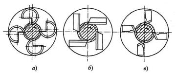
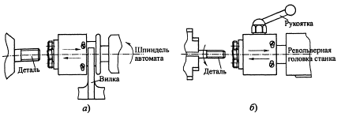

Они имеют достаточно широкое применение при нарезании чаще наружных и реже внутренних резьб на винтах, болтах, трубах и других деталях. Эти головки представляют собой достаточно сложные сборные конструкции с режущими элементами в виде круглых гребенок или плоских плашек, устанавливаемых в корпусе головки.
Резьбонарезные головки делятся на две основные группы: самооткрывающие и регулируемые. У первых производится отвод гребенок от заготовки в конце операции нарезания резьбы и тем самым отпадает необходимость в обратном свинчивании, а следовательно, сокращается вспомогательное время и резко возрастает производительность. Поэтому эти головки получили большее распространение, чем регулируемые, хотя последние проще по конструкции.
Резьбонарезные головки бывают вращающимися (модели 1КА...5КА), применяемыми на токарных автоматических и полуавтоматических станках, а также невращающимися, применяемыми на токарных и револьверных станках. Раскрытие головки осуществляется при помощи упоров на станке и вилки, устанавливаемой в кольцевой проточке вращающейся головки или с помощью рукоятки у невращающихся головок. В первом случае обычно заготовка не вращается, но может и вращаться. При этом раскрытие и закрытие головки происходит автоматически. Во втором случае вращается только заготовка и подача головки происходит самозатягиванием или принудительно.
У невращающихся головок (модели 1К...5К) раскрытие головки производится автоматически в конце хода, а закрытие - вручную, с помощью рукоятки.
Из гребенок, применяемых в головках, наибольшее распространение получили круглые гребенки, которые более технологичны, имеют точную шлифованную резьбу и допускают большое количество переточек.
Головки с тангенциальными плашками хотя и допускают большое количество переточек, но из-за меньшей технологичности вытесняются головками с круглыми гребенками. Еще реже применяются головки с призматическими радиальными плашками, имеющими минимальный запас на переточку, хотя конструкции головок с такими плашками более компактны.